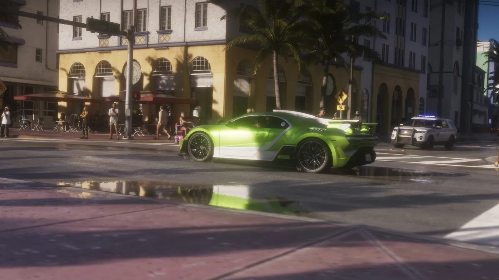
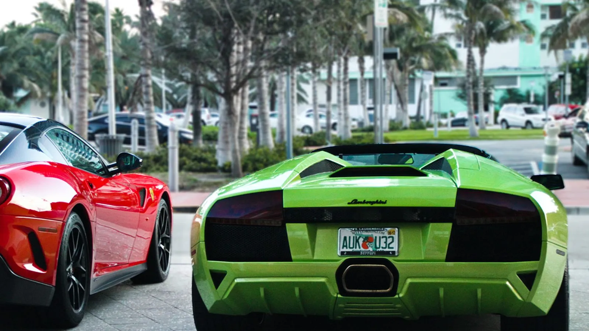
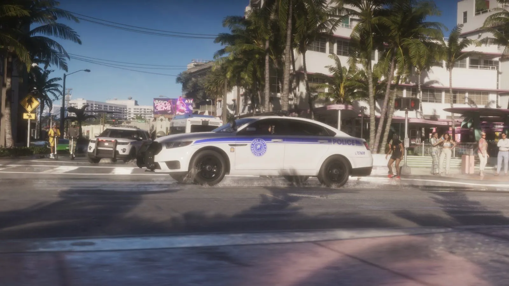
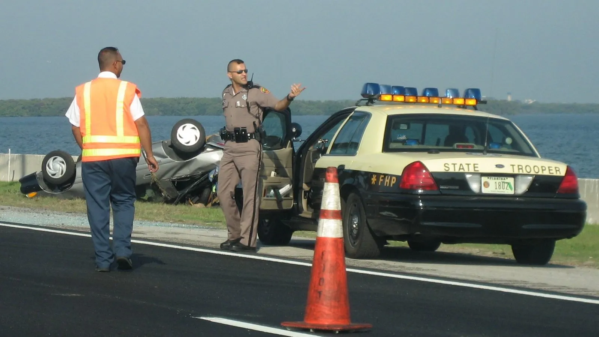

Уличная гонка из трейлера GTA 6 и законы Флориды о стрит-тейковерах
Опубликовано:
Гонки на спорткарах по городским улицам и погони полиции — реальная проблема Флориды: штат дважды менял закон, чтобы с ними бороться. Но конкретного события Rockstar не повторяет — это общая тема, а не копия.


- В третьем трейлере GTA 6 зелёный спорткар и красная машина пролетают перекрёсток у отелей ар-деко прямо перед пешеходами.
- Следом в заносе, с дымом из-под колёс, проходит полицейский седан, за ним — полицейский внедорожник.
- Во Флориде такие заезды запрещает статья 316.191 закона о дорожном движении.
- В 2022 году штат добавил в неё стрит-тейковеры и трюки — бёрнаут, «пончики», дрифт и езду на заднем колесе.
- С 1 июля 2024 года за первое нарушение — штраф от 500 до 2 000 долларов и лишение прав на год.
Что в игре
Около 0:47 третьего трейлера (15 октября 2026) — солнечный день, улица с пальмами и отелями в стиле ар-деко: жёлтое здание с арками, кафе с красными навесами, толпа на тротуарах. Через перекрёсток прямо перед пешеходами пролетают зелёный спорткар с белыми полосами и красная машина.
Через секунду ту же улицу проходит в заносе полицейский седан с надписью POLICE — из-под колёс идёт дым, — а за ним едет полицейский внедорожник с мигалками. Пешеход на переходе бежит.

Что в реальности
Во Флориде уличные гонки запрещает статья 316.191 закона о дорожном движении. В 2022 году законодатели расширили её законом HB 399: в статью добавили стрит-тейковеры (когда машины перекрывают улицу или перекрёсток для заездов и трюков) и трюковую езду — бёрнаут, «пончики», дрифт и езду на заднем колесе. Полиция получила право арестовывать за это без ордера, а зрителем по закону считается и тот, кто снимает заезд или выкладывает его в соцсети. Закон вступил в силу 1 октября 2022 года.
Через два года наказание сделали жёстче. Закон SB 1764 (глава 2024-146), подписанный 6 мая 2024 года, действует с 1 июля 2024 года:
- первое нарушение — штраф от 500 до 2 000 долларов и лишение прав на 1 год;
- второе за 5 лет — от 2 500 до 4 000 долларов и лишение прав на 2 года;
- третье за 5 лет — от 3 500 до 7 500 долларов и лишение прав на 4 года;
- просто стоять и смотреть — штраф 400 долларов;
- машину владельца-нарушителя могут забрать на штрафстоянку на 30 рабочих дней.

В законе 2024 года появилось понятие «скоординированный стрит-тейковер» — 10 и больше машин, которые организованно перекрывают улицу. Участие в нём — уже не проступок, а тяжкое преступление (felony третьей степени), а машину могут конфисковать по закону штата о конфискации.
Совпадает и отличается
| Флорида | GTA 6 | |
|---|---|---|
| Спорткары гоняют по городским улицам | Да, поэтому закон и ужесточали | 🟡 Да, перекрёсток у отелей ар-деко |
| Дрифт и дым из-под колёс | Запрещён как трюковая езда (с 2022) | 🟡 В заносе идёт полиция |
| Пешеходы рядом с заездом | Зрителям — штраф 400 $ | 🔵 Пешеходы есть, наказаний в трейлере не видно |
Источники: Rockstar Games — третий трейлер GTA 6 (15 октября 2026); The Florida Senate — Bill Summary CS/CS/CS/HB 399 «Motor Vehicle and Vessel Law Enforcement» (2022); Laws of Florida — глава 2024-146 (CS/SB 1764), утверждён 6 мая 2024; Wikimedia Commons — фото Tom Wolf (CC BY-SA 2.0) и Tampa Gator (public domain).
Реальные фото: Фото: Tampa Gator at English Wikipedia, Public domain · Wikimedia Commons; Фото: Tom Wolf (Flickr), CC BY-SA 2.0 · Wikimedia Commons. Кадры игры: Rockstar Games.
Каждый день — одно сравнение: кадр игры рядом с реальным фото. Подписывайтесь:
YouTubeInstagramTikTok
 vs
vs

 vs
vs